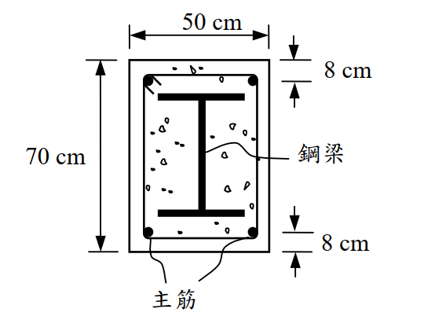
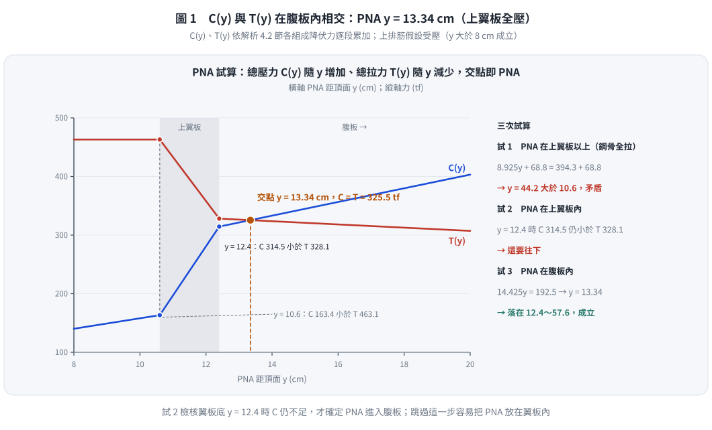
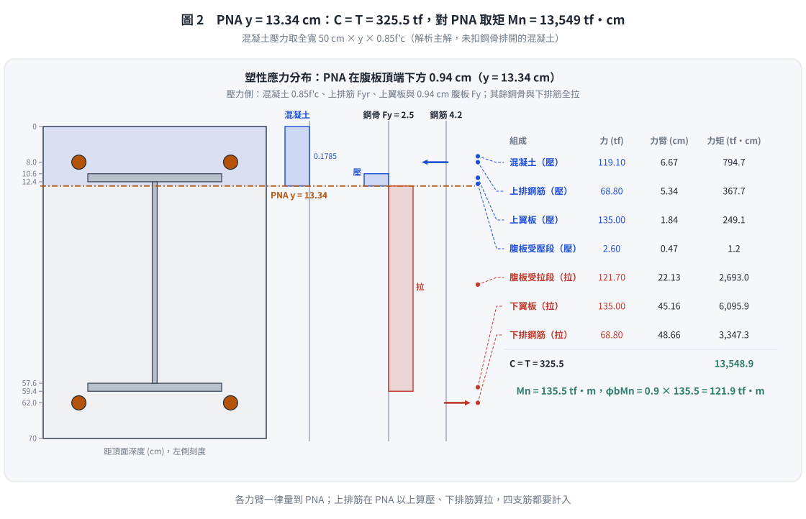

📄 題目正本：考卷原文・附圖・判讀清單（待確認）
SS-2005-2 題目正本
本檔只記錄考卷上寫了什麼、圖上畫了什麼，不含任何解法。解析見同資料夾
SS-2005-2.md。
判讀清單經使用者確認前，狀態為「待確認」；確認後本檔原則上不再修改（改動須回考卷原圖並記 log）。
| 項目 | 內容 |
|---|---|
| 考卷 | raw/exams/SS-2005_鋼結構設計.pdf 第 1 頁（全一張之正面），第二題 |
| 考年 | 民國 94 年（2005） |
| 配分 | 25 分 |
| 附圖 | 1 張（混凝土包覆梁斷面），SS-2005-2-fig-1.png |
| 判讀狀態 | 待確認（轉錄 2026-11-02，PyMuPDF 110 dpi 全頁＋附圖 450 dpi 局部目視，盲讀後才比對既有解析） |
1. 考卷原文（逐字）
二、鋼結構極限強度設計法規範對於混凝土包覆梁之設計撓曲強度訂為 $\phi_bM_n$，$\phi_b$=0.9，$M_n$ 依塑性應力分析而得。試依塑性應力分析，計算圖示混凝土包覆合成梁之標稱撓曲強度 $M_n$。假設鋼梁與鋼筋全斷面達降伏應力，並考慮鋼梁、主筋與混凝土之貢獻。鋼梁為 H488×300×11×18（$d \times b_f \times t_w \times t_f$，mm）之型鋼，置於梁斷面中心位置，鋼材 $F_y$ = 2.5 tf/cm²，$F_u$ = 4.1 tf/cm²。四支主筋為 D32 鋼筋（每支截面積為 8.19 cm²），$F_y$ = 4200 kgf/cm²。混凝土 $f'_c$=210 kgf/cm²。（25 分）
2. 考卷給的公式、附表與參數
- 題文：$\phi_b = 0.9$；H488×300×11×18；鋼材 $F_y = 2.5$、$F_u = 4.1$ tf/cm²；D32 每支 8.19 cm²、$F_y = 4200$ kgf/cm²；$f'_c = 210$ kgf/cm²。
- 圖面：斷面 50 cm × 70 cm；主筋距上、下緣 8 cm。
- 本題沒有印公式（混凝土應力塊係數等需自取）；單位混用 tf 與 kgf。
- 卷首注意事項：㈠不必抄題；㈡可以使用電子計算器，但需詳列解答過程。
3. 附圖

圖面文字照錄：50 cm；70 cm；8 cm；8 cm；鋼梁；主筋。
4. 判讀清單
「把握」標不確定者請優先確認；解讀類項目（題目用字的意思）另標「解讀」。
| # | 項目 | 判讀 | 圖上／題文依據 | 把握 |
|---|---|---|---|---|
| 1 | 斷面尺寸 | 寬 50 cm、高 70 cm | 附圖尺寸線 | 確定 |
| 2 | 8 cm | 上、下緣至主筋中心（尺寸線端點對齊鋼筋圓心，不是箍筋線） | 附圖 450 dpi | 確定 |
| 3 | 主筋配置 | 上 2 支、下 2 支，位於四角 | 附圖 | 確定 |
| 4 | 鋼梁位置 | 直立置中（強軸水平），上下翼板外緣距斷面緣各 $(70 - 48.8)/2 = 10.6$ cm | 題文「置於梁斷面中心位置」＋附圖 | 確定 |
| 5 | 所求 | 標稱 $M_n$（不乘 $\phi_b$），塑性應力分布，計入鋼梁、主筋、混凝土 | 題文 | 確定 |
| 6 | 混凝土受拉 | 塑性中性軸以下混凝土不計 | 塑性應力分析慣例 | 確定（解讀） |
| 7 | 混凝土應力 | 受壓區取 $0.85f'_c$ 均佈（係數題未給） | 題文未給 | 不確定（解讀） |
| 8 | 鋼筋處混凝土 | 受壓區是否扣除鋼梁與鋼筋所佔面積 | 題文未提 | 不確定（解讀） |
轉錄：2026-11-02（SS-U1-2 題目正本推廣・批 1）
考題編號：SS-2005-2
主分類： SS-U1-2 梁桿件
副分類： （無）
設計法： LRFD（塑性應力分佈法）
標籤： SRC鋼骨鋼筋混凝土 塑性應力分佈法 公稱彎矩強度 塑性中性軸 降伏力 合成斷面 單位換算
1. 原始題目重述
鋼結構極限強度設計法規範對於混凝土包覆梁之設計撓曲強度訂為 $\phi_bM_n$，$\phi_b = 0.9$，$M_n$ 依塑性應力分析而得。試依塑性應力分析，計算圖示混凝土包覆合成梁之標稱撓曲強度 $M_n$。假設鋼梁與鋼筋全斷面達降伏應力，並考慮鋼梁、主筋與混凝土之貢獻。鋼梁為 H488×300×11×18（$d \times b_f \times t_w \times t_f$，mm）之型鋼，置於梁斷面中心位置，鋼材 $F_y = 2.5$ tf/cm²，$F_u = 4.1$ tf/cm²。四支主筋為 D32 鋼筋（每支截面積 8.19 cm²），$F_y = 4200$ kgf/cm²。混凝土 $f'_c = 210$ kgf/cm²。（25 分）
圖說（依考卷原圖 450 dpi 目視判讀）：斷面寬 50 cm、高 70 cm；H 型鋼置中，上下翼板外緣距斷面上下緣各 $(70 - 48.8)/2 = 10.6$ cm；四支 D32 位於四角，上下各 2 支，鋼筋中心距上、下緣各 8 cm（尺寸線量至鋼筋中心）。
單位換算（注意）：
$$f'_c = 210\ \text{kgf/cm}^2 = 0.21\ \text{tf/cm}^2,\qquad 0.85f'_c = 0.1785\ \text{tf/cm}^2$$
$$F_{yr} = 4200\ \text{kgf/cm}^2 = 4.2\ \text{tf/cm}^2$$
2. 考題核心精神與出題者意圖
本題測驗包覆型合成梁（SRC 梁）的塑性應力分布法：混凝土受壓區取 $0.85f'_c$ 均勻應力，鋼骨與鋼筋各自全斷面降伏（受壓或受拉），由力平衡找塑性中性軸（PNA），再取力矩得 $M_n$。
關鍵在判斷 PNA 落在哪裡。混凝土強度只有鋼材的 1/12～1/20，靠混凝土單獨平衡全部鋼骨＋鋼筋拉力需要很深的壓力區；實際上 PNA 會往下進到型鋼上翼板以下，上排鋼筋與上翼板都在受壓區。
3. 解題戰略地圖與陷阱分析
作戰計畫：
1. 建立座標（頂面為 0、向下為正），列出各材料位置與降伏力
2. 先試 PNA 在上翼板以上：所需壓力區深度遠超過上翼板位置 → 不成立
3. 設 PNA 在腹板內（深度 $y$），以 $C = T$ 解 $y$
4. 對 PNA 取力矩求 $M_n$；$\phi_bM_n = 0.9M_n$
陷阱分析：
| 陷阱 | 說明 | 應對策略 |
|---|---|---|
| ⚠️ $0.85f'_c$ 單位 | 210 kgf/cm² = 0.21 tf/cm²，$0.85f'_c = 0.1785$ tf/cm²；寫成 1.785 會讓混凝土強度放大 10 倍 | 換算後對照「混凝土約為鋼材 1/12」做合理性檢查 |
| ⚠️ PNA 位置 | 不能先假設 PNA 在混凝土頂部；要用力平衡試算 | 依序試「上翼板以上」→「腹板內」 |
| ⚠️ 上排鋼筋受壓 | PNA 在 13.3 cm，上排筋（8 cm）與上翼板受壓 | 受壓鋼材也以 $F_y$ 計 |
3.5 變數層次分析（Variable Hierarchy Analysis）
複習提示：解題後，在每個卡住的知識點「卡關?」欄標記
⚠；第二次複習時只看有⚠的項目。
最終目標： SRC 梁塑性應力分佈法 → 確定 PNA 位置 → 對 PNA 取矩求 $M_n$
主要公式（$\boxed{\phantom{x}}$ = 未知，待推導）
$$0.85f'_c\,b\,\boxed{y} + \sum F_{\text{鋼，壓}} = \sum F_{\text{鋼，拉}}\quad(\text{力平衡求 PNA 深度 } y)$$
$$\boxed{M_n} = \sum F_i\,|y_i - y|,\qquad \phi_bM_n = 0.9M_n$$
L1：題目直接給定
| 符號 | 數值 | 說明 |
|---|---|---|
| 斷面 | 50 × 70 cm | 混凝土外廓 |
| 鋼梁 | H488×300×11×18 | 置中，頂緣距斷面頂 10.6 cm |
| $F_y$ | 2.5 tf/cm² | 鋼梁 |
| 主筋 | 4-D32（8.19 cm²/支），上下各 2 支 | 中心距上下緣 8 cm |
| $F_{yr}$ | 4.2 tf/cm² | 鋼筋 |
| $f'_c$ | 0.21 tf/cm² | 混凝土 |
| $\phi_b$ | 0.9 | 題目給定 |
L2：需知識點推導
| 符號 | 公式 / 來源 | 卡關? |
|---|---|---|
| 鋼梁降伏力 | 翼板 $30 \times 1.8 \times 2.5 = 135.0$ t（各）；腹板 $45.2 \times 1.1 \times 2.5 = 124.3$ t；合計 394.3 t | |
| 鋼筋降伏力 | $2 \times 8.19 \times 4.2 = 68.8$ t（上、下各） | |
| 試 PNA 在上翼板以上 | 需 $0.1785 \times 50 \times y + 68.8 = 394.3 + 68.8$ → $y = 44.2$ cm，超過上翼板（10.6 cm）→ 不成立 | ⚠ |
| PNA（腹板內） | $8.925y + 68.8 + 135.0 + 2.75(y - 12.4) = 2.75(57.4 - y) + 135.0 + 68.8$ → $y = 13.34$ cm | |
| $C = T$ | 325.5 t | |
| $M_n$ | 13,549 t·cm = 135.5 t·m | |
| $\phi_bM_n$ | $0.9 \times 135.5 = $ 121.9 t·m |
L3：深層知識（不懂就卡住）
| 知識點 | 說明 | 卡關? |
|---|---|---|
| 塑性應力分布法 | 混凝土受壓 $0.85f'_c$ 矩形塊（不計抗拉），鋼材受拉、受壓皆取 $F_y$ | |
| PNA 位置判斷 | 先比較「各區段以上的壓力上限」與「以下的拉力」，逐段試 | |
| 單位換算 | kgf/cm² ÷ 1000 = tf/cm² | |
| 包覆梁與純鋼梁 | 本題 $M_n$ 約為鋼梁單獨 $M_p$（77.5 t·m）的 1.75 倍 |
4. 步驟化詳細計算過程
4.1 幾何位置（以頂面為零點，向下為正）
| 組成 | 位置 (cm) |
|---|---|
| 上排鋼筋中心 | 8.0 |
| 上翼板 | 10.6 ～ 12.4 |
| 腹板 | 12.4 ～ 57.6 |
| 下翼板 | 57.6 ～ 59.4 |
| 下排鋼筋中心 | 62.0 |
4.2 各組成材料降伏力
| 組成材料 | 面積 (cm²) | 強度 (tf/cm²) | 降伏力 (tf) |
|---|---|---|---|
| 混凝土受壓區 | $50 \times y$ | 0.1785 | $8.925y$ |
| 上排鋼筋 2-D32 | 16.38 | 4.2 | 68.8 |
| 上翼板 | 54.0 | 2.5 | 135.0 |
| 腹板 | 49.72 | 2.5 | 124.3（每 cm 2.75） |
| 下翼板 | 54.0 | 2.5 | 135.0 |
| 下排鋼筋 2-D32 | 16.38 | 4.2 | 68.8 |
4.3 塑性中性軸（PNA）位置
試 1：PNA 在上翼板以上（鋼骨全受拉）
$$8.925y + 68.8 = 394.3 + 68.8\ \Rightarrow\ y = 44.2\ \text{cm} > 10.6\ \text{cm}\quad\text{✗（矛盾）}$$
試 2：PNA 在上翼板內（$10.6 \le y \le 12.4$）
$y = 12.4$ 時壓力 $= 8.925 \times 12.4 + 68.8 + 135.0 = 314.5$ t < 拉力 $124.3 + 135.0 + 68.8 = 328.1$ t → PNA 還要再往下 ✗
試 3：PNA 在腹板內（$12.4 \le y \le 57.6$）
$$\underbrace{8.925y + 68.8 + 135.0 + 2.75(y - 12.4)}_{C} = \underbrace{2.75(57.6 - y) + 135.0 + 68.8}_{T}$$
$$14.425y = 158.4 + 34.1\ \Rightarrow\ \boxed{y = 13.34\ \text{cm}}\quad(\text{落在腹板頂端下方 0.94 cm})\ \checkmark$$

圖 1 $C(y)$ 與 $T(y)$ 在腹板內相交，PNA $y = 13.34$ cm：試 1 假設鋼骨全拉得 $y = 44.2$ 矛盾；試 2 在上翼板底 $y = 12.4$ 時 $C = 314.5 < T = 328.1$，還要往下；試 3 在腹板內成立。這張圖攔的是 PNA 停在上翼板內就作答，或試 1 矛盾後沒有換段重算。
4.4 公稱彎矩強度 $M_n$（對 PNA 取矩）
| 組成 | 壓／拉 | 力 (tf) | 作用位置 (cm) | 力臂 (cm) | 力矩 (tf·cm) |
|---|---|---|---|---|---|
| 混凝土 | 壓 | 119.10 | 6.67 | 6.67 | 794.7 |
| 上排鋼筋 | 壓 | 68.80 | 8.00 | 5.34 | 367.7 |
| 上翼板 | 壓 | 135.00 | 11.50 | 1.84 | 249.1 |
| 腹板受壓段 | 壓 | 2.60 | 12.87 | 0.47 | 1.2 |
| 腹板受拉段 | 拉 | 121.70 | 35.47 | 22.13 | 2,693.0 |
| 下翼板 | 拉 | 135.00 | 58.50 | 45.16 | 6,095.9 |
| 下排鋼筋 | 拉 | 68.80 | 62.00 | 48.66 | 3,347.3 |
| 合計 | $C = T = 325.5$ | 13,548.9 |
$$\boxed{M_n = 13{,}549\ \text{tf}\cdot\text{cm} \approx 135.5\ \text{tf}\cdot\text{m}}$$
$$\phi_bM_n = 0.9 \times 135.5 = \boxed{121.9\ \text{tf}\cdot\text{m}}$$
雙路徑驗算： 以頂面為力矩中心，$M_n = \sum T_iy_i - \sum C_iy_i = 13{,}549$ tf·cm ✔。若扣除型鋼在受壓區排開的混凝土（上翼板與 0.94 cm 腹板處不計混凝土），PNA 移至 14.04 cm，$M_n = 135.3$ tf·m，差 0.2%。

圖 2 七個力對 PNA 取矩合計 13,548.9 tf·cm，$M_n = 135.5$ tf·m，$\phi_bM_n = 121.9$ tf·m；下翼板（45.16 cm）與下排筋（48.66 cm）力臂最長，貢獻七成力矩。這張圖攔的是力臂沒量到 PNA、漏了上排或下排鋼筋，或混凝土壓力深度取錯。
5. 關鍵爭議點與進階探討
5.1 舊版解析的單位錯誤
舊版把 $0.85f'_c$ 寫成 $1.785$ tf/cm²（應為 0.1785），混凝土強度被放大 10 倍，於是只需 5.96 cm 的壓力區就能平衡全部鋼材拉力，得到「所有鋼骨與鋼筋都受拉」、$M_n = 170.3$ tf·m 的錯誤結果。
合理性檢查： 鋼材 $F_y = 2.5$ tf/cm²，混凝土 $0.85f'_c$ 只有 0.18 tf/cm²，約為鋼材的 1/14。一個 50 cm 寬、6 cm 深的混凝土塊（300 cm²）只能提供 54 t，遠小於型鋼 394 t 的拉力——看到 PNA 只有幾公分深就該警覺。
5.2 PNA 為何停在上翼板下方
壓力區混凝土貢獻有限，主要靠上翼板（135 t）與上排鋼筋（69 t）受壓來平衡。這兩項加上 12.4 cm 深的混凝土（111 t）已達 314 t，只差一點點，所以 PNA 只往腹板內走了 0.94 cm。
5.3 與純鋼梁的比較
$$M_{p,鋼} = F_yZ_x = 2.5 \times 3{,}099.8 = 7{,}750\ \text{tf}\cdot\text{cm} = 77.5\ \text{tf}\cdot\text{m}$$
包覆後 $M_n = 135.5$ tf·m，約為純鋼梁的 1.75 倍。增量主要來自上下鋼筋形成的力偶（約 $68.8 \times 54 = 3{,}715$ tf·cm）以及混凝土讓 PNA 上移後鋼骨拉力臂加長。
6. 依最新規範（AISC 360-16／-22）對照
| 項目 | 考卷（我國極限設計法，$\phi_b = 0.9$） | AISC 360-16 §I3.3 |
|---|---|---|
| 方法 | 合成斷面塑性應力分布 | 可用 (a) 鋼骨單獨塑性 $M_p$、(b) 合成斷面塑性應力分布（需有剪力連接）或 (c) 應變相容法 |
| $\phi_b$ | 0.9 | 0.90 |
| 本題 | $M_n = 135.5$ t·m | 方法 (b) 相同 135.5 t·m；若無剪力釘只能用 (a)：$M_n = 77.5$ t·m |
觀察： 我國鋼骨鋼筋混凝土構造設計規範對 SRC 梁另有規定，實務設計應依該規範；考題依題意以塑性應力分布計算即可。
修正日期：2026-11-01（原解將 $0.85f'_c$ 誤寫為 1.785 tf/cm²（應為 0.1785），致 PNA 誤落在 5.96 cm、全部鋼材受拉；更正 PNA 為距頂 13.34 cm（上翼板下方腹板內），上排鋼筋與上翼板受壓，$M_n$ 由 170.3 更正為 135.5 tf·m、$\phi_bM_n$ 由 153.3 更正為 121.9 tf·m；依原卷重述題目（原解自行增列「列出各組成材料降伏力」子題）；新增雙路徑驗算與 §6 對照）
圖解補繪：2026-11-03（向量圖 2 張，腳本 gen_SS-2005-2.py，改輸入可原地重跑；SVG 供 wiki／PDF，2× PNG 供 pptx／影片）
驗證狀態：unverified